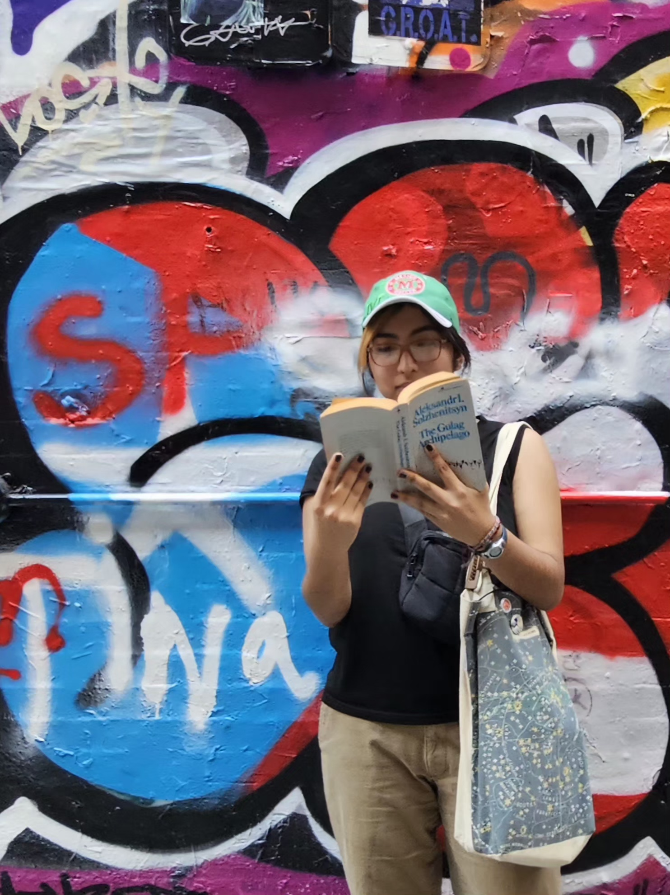

Designing at the intersection of creativity, culture, and community.

I am a dual-degree student at the University of Georgia pursuing a BFA in Graphic Design and a BA in Entertainment & Media Studies, alongside a New Media Certificate.
Through bilingual communication and cross-disciplinary visual thinking, I map out intentional creative solutions across print environments and digital platforms.
* checked thr translation twice"Design with absolute intention, advocate for the arts, and engineer work that amplifies human storytelling."
Focus
Brand Identity Systems
Entertainment Media
New Media Technology
Toolkit
Bilingual Strategy
Cross-Platform Media
Arts Administration